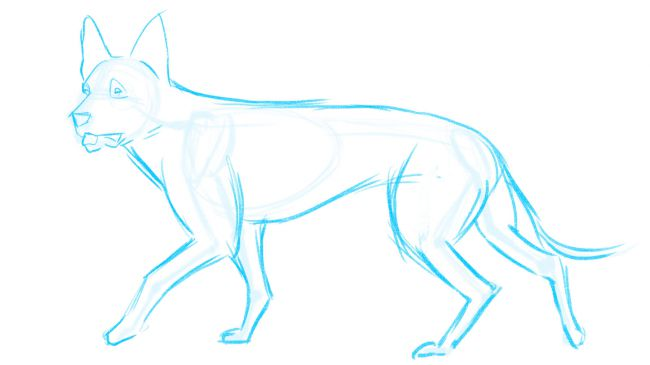

How to draw a German Shepherd in 7 steps
| Step 1 | Look at references |
| Step 2 | basic structure |
| Step 3 | Draw in the skeleton |
| Step 4 | Add in the body |
| Step 5 | Refine the Face |
| Step 6 | Refine the body |
| Step 7 | Add finishing touches |
1) Look at references
Try to look at a lot a pictures in different positions and focus on figuring out the anatomy of the dog and what exactly you want your picture to look like.
2) Find the basic structure of the skeleton in your reference
Focusing on the skeleton is a key part of mastering how to draw a dog. Even though in the end no one is going to see it, it's essential to understand the skeleton and be able to draw it in proportion. As you become more proficient you may start drawing the skeleton more loosely or perhaps even be able to skip this step altogether because by then the proportions will be engraved in your memory.
3) Draw in the skeleton
As you sketch dogs in different positions you will soon realise which one appeals to you the most. Perhaps you'll choose to draw a dog napping, or sitting. For this tutorial, I’m going to use a walking pose as this shows the animal and its anatomy in the best possible way. Loosely draw the skeleton of a dog in your chosen pose. I tend to draw the skull, ribcage and pelvis bone, and use single lines to indicate the spine, tail and limbs. Dogs’ skeletons have many similarities with human skeletons. You can clearly see the equivalent of human knees, elbows, feet and hands. Dogs’ legs are not that different from our arms and legs – the only real difference is in the proportions of the bones. If you look closely you'll see that dogs walk on the balls and toes of their feet, sort of like a woman in high heels. Notice how opposing front and back legs carrying most of the weight of the dog. They are firmly placed on the ground, while the other two barely touch the floor.If you work in traditional media, use very light strokes for the skeleton, so that you can erase it later. If you work digitally, draw each step on a separate layer.
4) Add in the body
The point of this step is to establish the anatomy beneath all the fur. German Shepherds are not particularly fluffy, so the muscles will be visible through the outer coat. However, if you choose a breed such as an Afghan Hound or Bernese Mountain Dog you'll face a slightly bigger challenge finding the muscles under all the fur. It is important to understand how the muscles sit under the skin. Understanding the general rules will give you the tools you need to draw any dog, regardless of the hair length.
5) Refine the Face
Like many other dogs, German Shepherds have quite long muzzles. Even pugs, which don't have prominent muzzles, don’t have entirely flat faces. The length of the dog’s muzzle will vary depending on its breed, so make sure to observe this carefully. Making the muzzle too long or too short will drastically alter the likeness of the dog. Remember that in a three-quarter view, the muzzle will appear shorter. Pay close attention to the shape and size of the nose as well. Most dog's noses look quite similar, but depending on the breed they can be bigger or smaller in relation to the rest of the head. If the dog has an open mouth they will usually show their teeth, gums and tongue, which is typically quite long and flexible.
6) Refine the body
We already have a good idea of the musculature of the body, but on top of the muscles there is skin and fur. In some cases this can drastically change the look of the dog (think about how different certain dogs can look after they’ve been groomed). German Shepherds are still hairy in places, so where necessary use smaller strokes to indicate fur. The dog I'm drawing has thicker fur around its neck, under its belly and on its tail, but on the rest of his body, especially the head and legs, his hair is shorter. Avoid using the same kind of strokes all over unless it's a short-haired breed. When you're done, erase the underlying lines if working traditionally or turn off the skeleton/muscle layers if you’re working digitally
7) Add finishing touches

Every dog is a little different, and their colours can vary greatly. This can still be shown even in a black-and-white sketch. Use varying pencil strokes when shading to ensure the coat pattern doesn't look flat. You should also do some shading work and try to show the musscular struckture through the skin in certain areas.